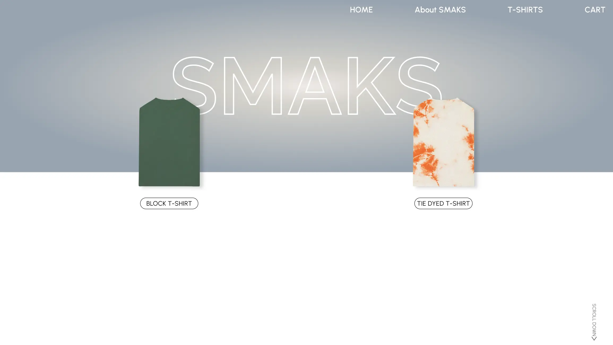
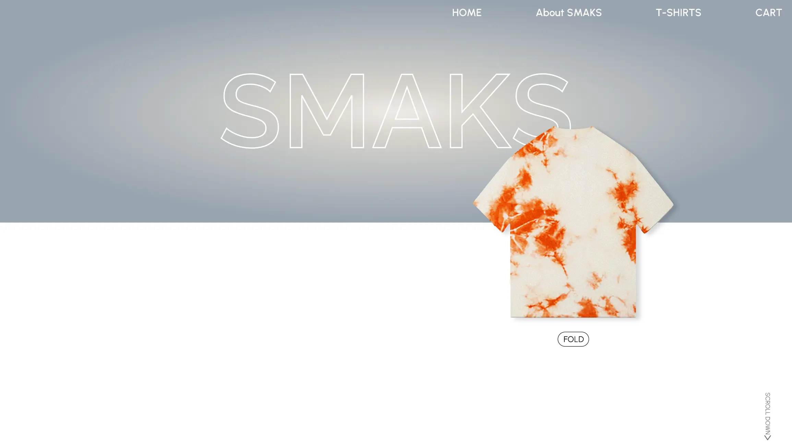
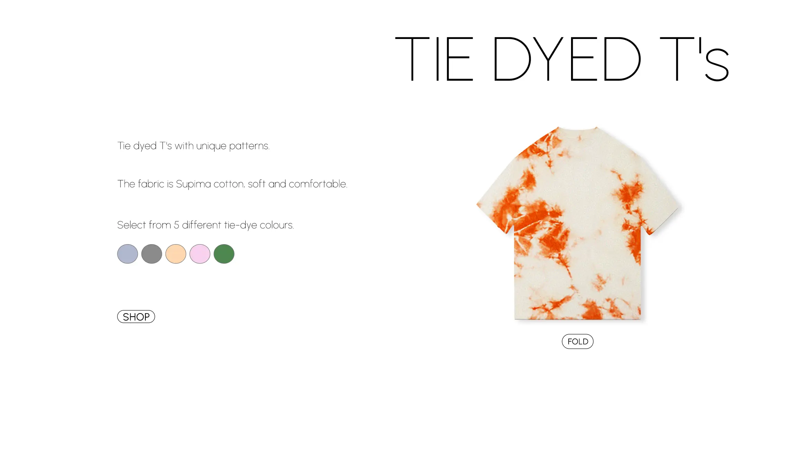
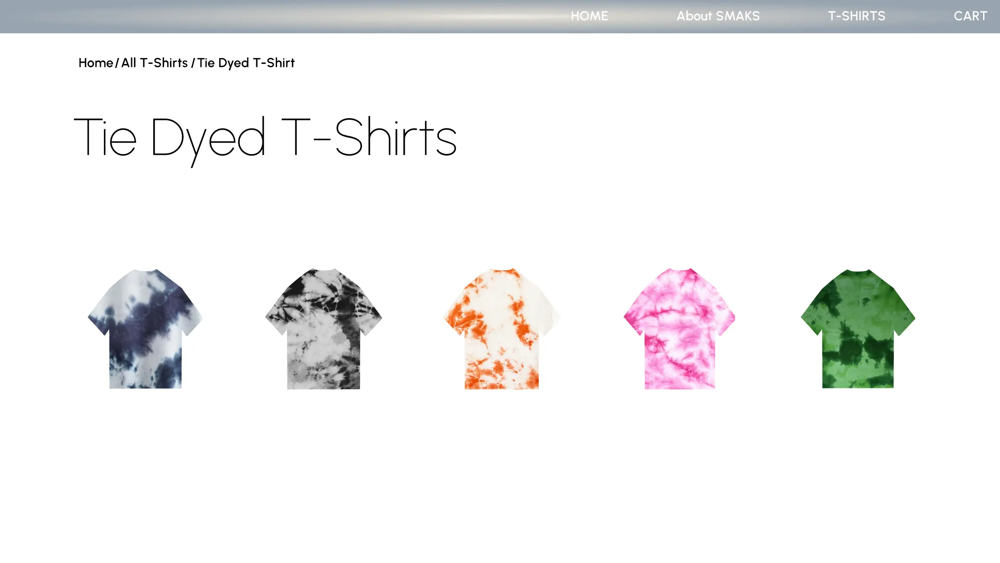
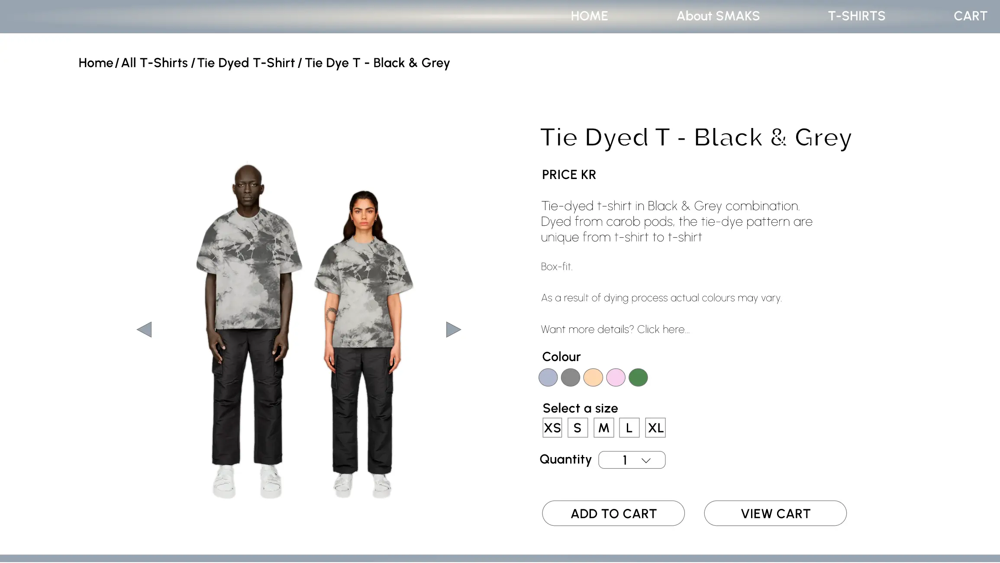

BACK TO
PROJECTS





A prototype project of a simplified online t-shirt store catered to the younger target audience. The design is simple and clean with focus on simple yet enjoyable user experience. The prototype was created in Adobe XD. Each member from the group pitched in with different ideas ( visually and how the website should function), aside from pitching in my visual ideas, my role was to also create the prototype in Adobe XD.
ADOBE XD | PHOTOSHOP | PROTOTYPING